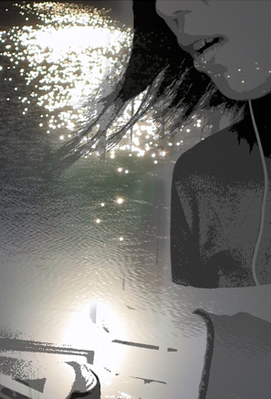
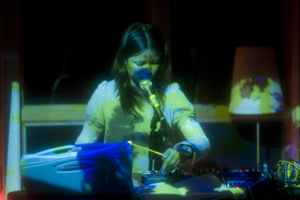
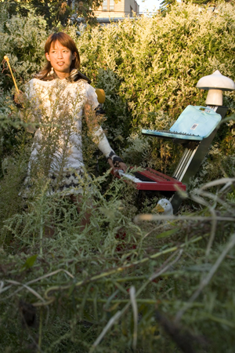
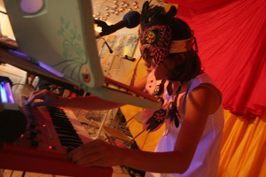

asakomusic
(solo project)
This text will be replaced by the flash music player.
Peach Purple Light
In a town of night rainbow
After the daylight rabbits garden
Peddals of flower you gave me will
Guide me thougth peach purple light
They are warming me
And extend my night wing
little bit more longer
Under the roofless sky
We may born again tonight
Under the roofless sky
Moon light keep us light tonight
Tonight, the birds picked the broken glasses
out of my heart one by one
by their beaks, fly out through
the passage of tears
flow up to face of the moon,
they will return to me as stars
Although tonight's nest is far away
i can go with you angels
Although last-night's scar isn't dry yet
I can keep stare at your beauty
till all gets better |
 |
|  |
Plastic Jungle
Am I back in here again? Or I never left?
Desire of a chil at heart,
reflects into my playroom of mirror
Plastic Jungle, plastic jungle...
Have I left? Do I go back? |
Green Cloud
Ride with me around the circle tonight
Slide over the moon to the shiny side
Swim under the green cloud, stream down to our fingers
Acculaterly delayed along the comet
Gently sinking till float up, gently sinking,,
Each drops fragment fills up ocean floor
Slowly slowly, purely purely,, water park
Let's exchange our rain drops, was it yours? or mine? |
 |
|  |
Sky Is Blue
I've been so alone without you
Please don't ever leave me again
Part of me you carry with you
I need that back to be free
You've been so gone all this time
How could we denine what we are
But it is never too late
As long as we're here, as long as we're here, we're here
Sky is blue in my mind
Since i know you are back
Stay here forever this time
you miss me anyways, I miss you anyways |
Hide & Seek
The game we play, I always loose
When it begins you have me all
When you take my hand, I can't say no
Untill I'm dead untill I hide
Wasn't there so much reason not to?
Weren't there many things to be said to you?
Where are they all gone to?
What about all you said?
Didn't mean a thing?
Stay, stay, stay, stay, stay, stay, stay, stay, stay, stay, stay, stay,
Stay away from me, ( maybe.. )
We wait till the circle when we're both forgiven
One day we may find back the day of summer again
|
Indian Fall
Riding on a cloud away from thinking
In chilling sunset, Blow off my foot steps
With purest wind and sunshine
Somewhere, somewhere between
Wonderland and my room
Looking down the cloud away from my time
Sitting in a air plane taking me to my dream
with futuristic human hand
|